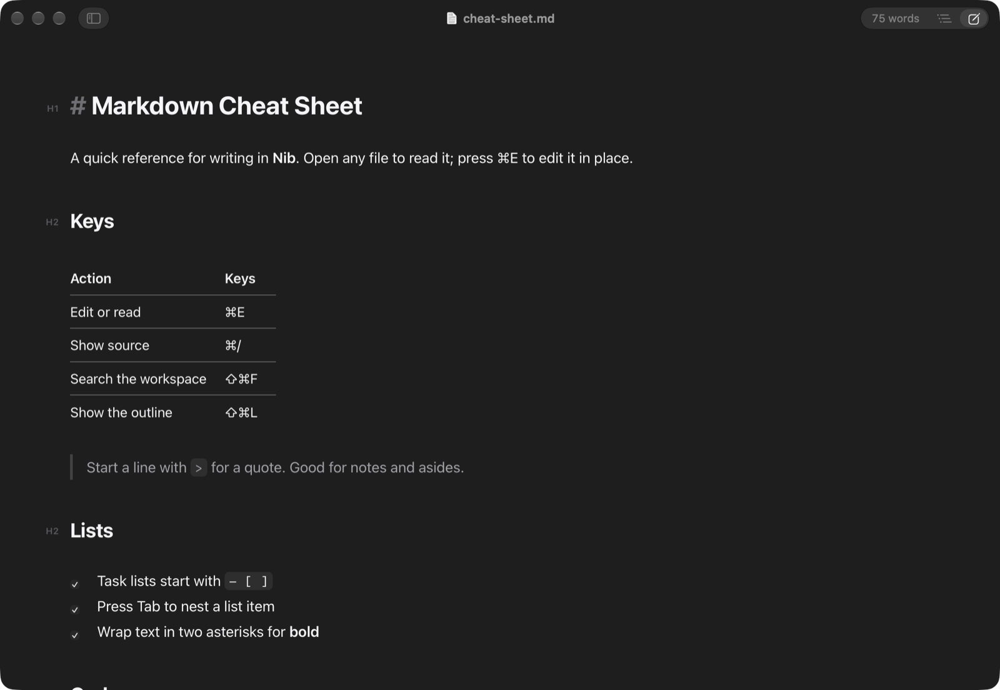

Mac 用オープンソース Markdown リーダー＆エディタ
.md を開けば、そのまま読める。
開いた瞬間に整形表示。⌘E でその場で編集。保存しても、手を入れた箇所以外はそのままです。
Mac 用オープンソース Markdown リーダー＆エディタ
開いた瞬間に整形表示。⌘E でその場で編集。保存しても、手を入れた箇所以外はそのままです。

Nib は無料でオープンソースの Mac 用 Markdown アプリです。ファイルをコードではなく、整形済みのドキュメントとして開きます。⌘E を押せばその場で編集でき、Markdown 記法が見えるのはカーソルのある行だけ。Typora と同じ感覚です。保存時に書き戻すのは編集した部分だけなので、git の差分もきれいなまま。ほかのプログラムがファイルを書き換えると自動で再読み込みし、すべての書類を一つのウインドウのタブにまとめ、フォルダ全体も検索できます。ネイティブアプリ、約 8 MB、macOS 15 以降。
読んでいるあいだは、ただのページです。

一語直せば、git diff に出るのもその一語だけ。
コーディングエージェントの計画、スクリプトのレポート、ビルドツールのドキュメント。ほとんどは読むだけで、ときどき一行直す。そんな Markdown のためのアプリです。
ターミナル、スクリプト、エージェントがファイルを書き換えると、開いているページが自動で更新されます。
Finder からでも、ターミナルやリンクからでも、ファイルは同じウインドウに集まります。⌘1〜⌘9 で切り替え。
変更したファイルにはオレンジ、新しいファイルには緑の点。コミットするとすぐに消えます。
⇧⌘O で名前から開き、⇧⌘F で全ファイルを検索して該当行へジャンプ。2,500 ファイルを 0.25 秒以内で。
最後のウインドウを閉じると Dock からは消えますが、待機は続けます。次のファイルは約 0.15 秒で開きます。
しばらく見ていないタブはメモリを解放し、戻ればもとの場所から再開します。

Typora ユーザーがよく使う機能は、ひととおりそろっています。
ファイルの隣の name.assets/ に保存し、相対パスでリンクします。typora-copy-images-to にも対応。
ブラウザ、Google Docs、Lark のリッチテキストを、きれいな Markdown に変換します。
CommonMark と GitHub Flavored Markdown に対応。Tab でリストをインデント。
⇧⌘L でアウトライン。F8 で今の段落以外を暗く。F9 で今の行を中央に保ちます。
PDF のほか、画像を埋め込んだ単一の HTML ファイルにも。そのまま送れます。
ライト、ダーク、ペーパー、または Typora のテーマ。フォント、行間、ショートカットも自由に変えられます。
Typora はその場編集の定番。MarkEdit は高速なネイティブのソースエディタ。Obsidian はノート管理の仕組み一式。Nib は Markdown を読むためのアプリで、必要なときにさっと直せます。
| Nib | Typora | MarkEdit | Obsidian | |
|---|---|---|---|---|
| ファイルを開くと | 整形済みのページ | ライブプレビューのエディタ | ハイライトされたソース | ライブプレビューのエディタ |
| ファイルの置き場所 | どこでも | どこでも | どこでも | Vault の中だけ |
| サイドバーで git の状態 | ✓ | — | — | プラグインが必要 |
| インターフェイス | ネイティブの外殻、CodeMirror のコア | Electron | ネイティブの外殻、CodeMirror のコア | Electron |
| 対応プラットフォーム | Mac | Mac · Windows · Linux | Mac | Mac · Windows · Linux · iOS · Android |
| 価格 · ライセンス | 無料 · GPL-3.0 | 有料 · プロプライエタリ | 無料 · MIT | 無料 · プロプライエタリ |
Nib は Apple の公証を受けていません。初回起動時に一度だけ許可してください。
Nib.dmg を開き、Nib を「アプリケーション」フォルダにドラッグします。
一度開いて「完了」をクリック。次に「システム設定 › プライバシーとセキュリティ」で「このまま開く」をクリックします。
Finder で .md ファイルを選び、⌘I を押して「このアプリケーションで開く」で Nib を選び、「すべてを変更」をクリックします。
macOS 15 以降が必要です。Apple シリコンと Intel の両方に対応したユニバーサルアプリです。
どれも設定で変更できます。
| 編集 / 閲覧 | ⌘E |
| ソース | ⌘/ |
| クイックオープン | ⇧⌘O |
| ワークスペース内を検索 | ⇧⌘F |
| サイドバー | ⌃⌘S |
| アウトライン | ⇧⌘L |
| フォーカス / タイプライター | F8F9 |
| タブを切り替え | ⌘1–⌘9 |
| 閉じたタブを再度開く | ⇧⌘T |
よく寄せられる質問です。
Nib は Typora と同じように Markdown をその場で編集でき、記法が見えるのはカーソルのある行だけです。無料で、GPL-3.0 のオープンソース、ネイティブ Mac アプリです。Typora と違い、ファイルはまず閲覧表示で開き、⌘E で編集に切り替えます。Typora のテーマも使えます。
Nib を .md ファイルのデフォルトアプリにして、ターミナルでファイルパスをクリックするか、Finder から開きます。ファイルは整形表示で、今あるウインドウのタブとして開き、エージェントが書き換えると自動で再読み込みします。プロジェクトフォルダをサイドバーに追加すれば、前回のコミット以降に変わったファイルもわかります。
編集した箇所だけです。保存時は変更部分だけを書き戻し、改行コードや空行も含めて、ほかは 1 バイトも変えません。メタデータを加えることも、隠しファイルを作ることもありません。
はい。テーマの CSS ファイルとそのフォルダを ~/Library/Application Support/Nib/themes に入れ、設定で選びます。閲覧表示ではテーマ全体が適用され、エディタでは色とフォントを借ります。Nib はこの形式を読めますが、Typora のテーマは同梱していません。
はい。無料で、GPL-3.0 のオープンソースです。アカウントも課金もありません。
Nib は Apple の公証を受けていません。一度開いて警告を閉じ、「システム設定 › プライバシーとセキュリティ」で「このまま開く」をクリックしてください。必要なのは一度だけです。
まだ対応していません。math や mermaid と指定したコードブロックは、コードとして表示されます。